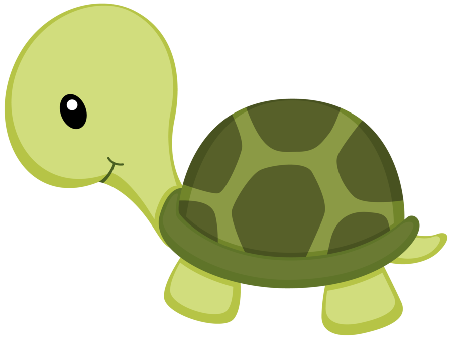

Adotar uma tartaruga?
Tartarugas são animais marinhos,
feitos para viver no mar e que estão em ameaça de
extinção, portanto,
é proibido domesticar ou vender nossos queridos amiguinhos
cascudos
de acordo com a Portaria nº. 1.522 do Ibama.
IBAMA, portaria nº 1.522, encontrada em:
https://cetesb.sp.gov.br/licenciamento/documentos/1989_Port_IBAMA_1522.pdf
Bom, se tartarugas marinhas não podem ser adotadadas por serem animais
em extinção, você, neste momento, deve estar se perguntando:
"Oras bolas !! Então por que você está falando para eu adotar uma
tartaruga?? você está ficando louco?"
resposta é muito simples meu caro amigo !! as
tartarugas pertecem a mesma ordem dos jabutis e cagatos, porém,
popularmente falando, chamamos tudo de tartaruga.
Por que? Oras, porque é mais facil!. Existem sim
algumas espécies de cagatos e jabutis que você pode ter como bixinho
de estimação na SUA casa.